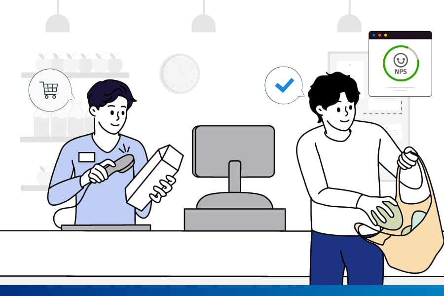

Vinein |
Inicio |
Nosotros |
Productos |
Servicios |
Contactanos |
|---|
Servicio al clientePara nosotros, el servicio al cliente es un aspecto crucial de nuestro compromiso contigo y tu proyecto. Reconocemos que la eficiencia en la atención a tus solicitudes es esencial. Estamos comprometidos a proporcionarte un servicio excepcional. |
 |
Live ChatEntendemos la importancia de brindarte una experiencia de compra excepcional. Para mejorar aún más tu experiencia, te ofrecemos nuestro servicio de chat en vivo. Con él, puedes obtener respuestas inmediatas a tus preguntas, asesoramiento personalizado y asistencia en tiempo real mientras navegas por nuestra tienda virtual. |